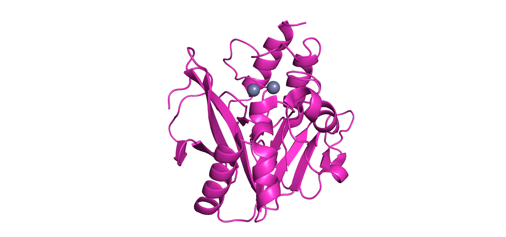

Nature’s Toolbox for the Hydrolysis of Lactams and Cyclic Imides
3.40.710.10
DD-peptidase/
β-Lactamase superfamily
EC: 3.5.2.6
e.g. (Serine) β-Lactamase
(class A, C, D)

3.60.15.10
Ribonuclease Z/
Hydroxyacylglutathione hydrolase-like
EC: 3.5.2.6
e.g. (Metallo) β-Lactamase
(class B)
3.90.1300.10
Amidase signature family
EC: 3.5.2.B2
e.g. (+)-γ-lactamases
3.40.50.1820
α/β-Hydrolases
EC: 3.5.2.B3
e.g. (−)-γ-lactamases
missing in CATH
Hydantoinase/
Oxoprolinase family
EC: 3.5.2.9, 3.5.2.14
e.g. 5-oxoprolinase
(ATP-hydrolysing)
3.20.20.140
Metal-dependent hydrolases
EC: 3.5.2.2, 3.5.2.3, 3.5.2.4, 3.5.2.18
e.g. dihydropyrimidinase/
hydantoinase
3.20.20.370
Glycoside hydrolase/
deacetylase
EC: 3.5.2.5, 3.5.2.18
e.g. allantoinase/
enamidase
3.30.1330.170/180/160
Cyanuric acid hydrolase/
Barbiturase RU A / RU B / RU C
EC: 3.5.2.1, 3.5.2.15
e.g. barbiturase/
cyanuric acid hydrolase
3.40.50.10310
Creatininase
EC: 3.5.2.10
e.g. creatininase
3.40.50.720
3.40.50.10860
Bifunctional protein FolD
EC: 3.5.2.13
e.g. 2,5-dioxopiperazine hydrolase
2.60.40.180
Transthyretin/
Hydroxyisourate
hydrolase domain
EC: 3.5.2.17
e.g. hydroxyisourate hydrolase
3.40.50.850
Isochorismatase-like
EC: 3.5.2.19
e.g. streptothricin hydrolase
3.50.30.50
Putative cyclase
EC: 3.5.2.20
e.g. isatin hydrolase